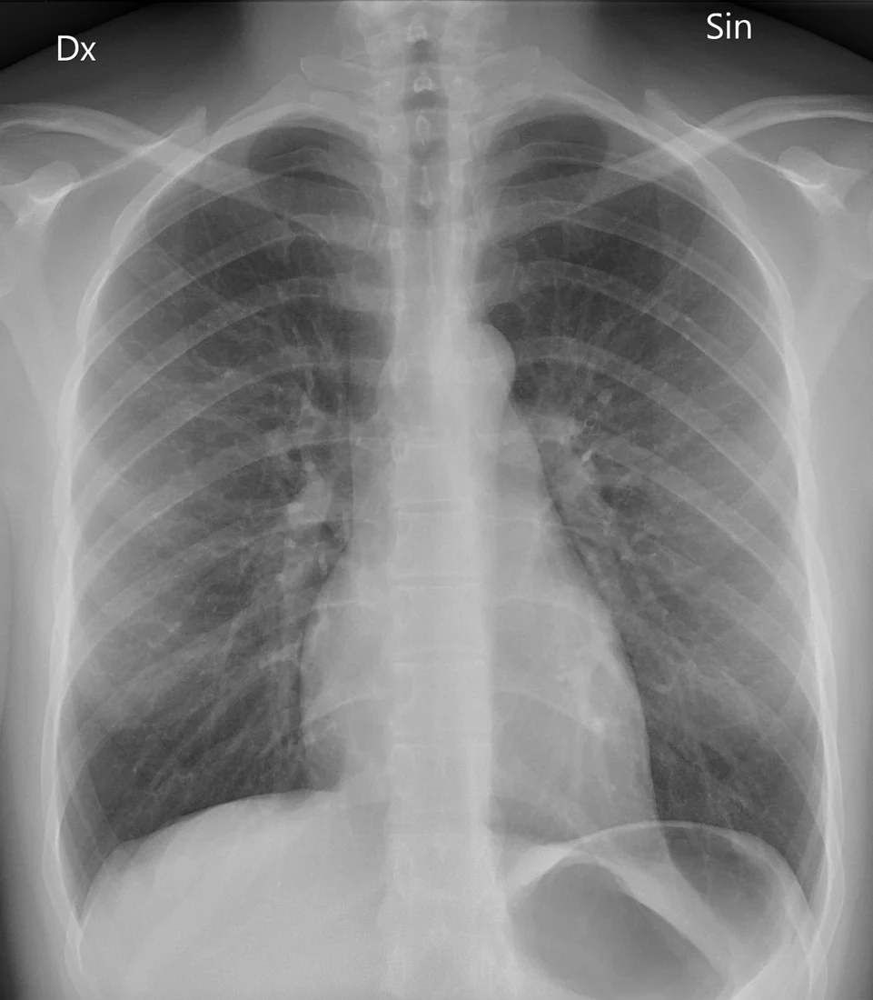

Proyecto universitario
Análisis de
radiografías de tórax
Explora cómo un modelo de inteligencia artificial preentrenado puede clasificar radiografías de tórax entre normal y patrones compatibles con neumonía.
Radiografía de tórax Vista PA

Analizador de radiografías
Usa una imagen de ejemplo o carga un archivo para previsualizarlo.
Modo demostración
Radiografía
Prueba con un ejemplo
Resultado
Esperando una imagen
Carga una radiografía o elige una imagen de ejemplo para comenzar.
Analizando imagen
Preparando el resultado…
Cómo funciona
Flujo de análisis previsto para el modelo preentrenado.
Carga
Selecciona una radiografía de tórax y revisa la vista previa.
Procesamiento
El servicio de predicción adapta la imagen al formato que espera el modelo.
Clasificación
La página presenta la clase estimada y la puntuación devuelta por el modelo.